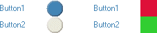

KineticaRT Studio LampIndicator

Features
The LampIndicator control
displays the value of a Boolean channel.
It has the following features:
-
Display of the channels description or a custom
description
-
Display of the channels tooltip or a custom
tooltip
-
Display of the channels Value by the use of two
colors
- Round and square lamp shapes
- Raised and flat lamp shapes
Connection
The KineticaRT Studio LampIndicator should be connected to channels containing values
of type KineticaRT.Values.Boolean.